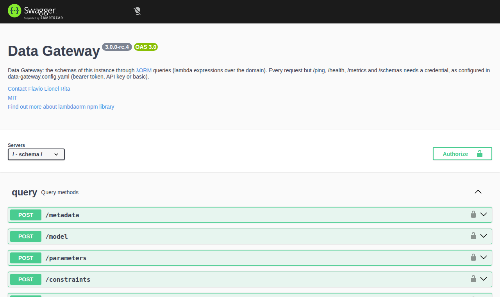

Primeiros passos
Este guia vai de uma pasta vazia até o banco de dados northwind publicado por um Data Gateway: sua API REST, sua UI web, o MCP para um agente de IA e sua API WebSocket. Leva cerca de dez minutos e precisa apenas do Docker (com Docker Compose).

1. Os arquivos
Crie uma pasta com esta estrutura (os arquivos podem ser baixados desta wiki):
northwind/
├── docker-compose.yml ← PostgreSQL and the Data Gateway
├── data-gateway.config.yaml ← how the gateway exposes the schema and who can use it
├── data.json ← the rows of northwind, to import
└── workspace/
└── lambdaORM.yaml ← the λORM schema: domain, mapping, source, stage
mkdir -p northwind/workspace && cd northwind
W=https://lambda-orm.github.io/wiki/data-gateway/northwind
curl -sO $W/docker-compose.yml
curl -sO $W/data-gateway.config.yaml
curl -sO $W/data.json
curl -s $W/lambdaORM.yaml -o workspace/lambdaORM.yaml
O esquema: workspace/lambdaORM.yaml
Um esquema normal do λORM: o domínio (entidades, propriedades, relações), o
mapeamento para as tabelas, uma fonte (PostgreSQL) e o stage default. Um trecho:
domain:
entities:
- name: Products
primaryKey: ["id"]
uniqueKey: ["name", "supplierId"]
properties:
- { name: id, type: integer, required: true, autoIncrement: true }
- { name: name, required: true }
- { name: categoryId, type: integer }
- { name: price, type: decimal, default: 0 }
relations:
- { name: category, from: categoryId, entity: Categories, to: id, target: products }
# … Categories, Customers, Orders, Orders.details
infrastructure:
mappings:
- name: default
entities:
- name: Products
mapping: Products
properties:
- { name: id, mapping: ProductID }
- { name: name, mapping: ProductName }
# …
sources:
- name: Northwind
dialect: PostgreSQL
mapping: default
connection: ${NORTHWIND_DB} # an environment variable: the gateway gives it to this schema
stages:
- name: default
sources:
- name: Northwind
O gateway: data-gateway.config.yaml
orm:
workspacePath: /workspace # the folder with lambdaORM.yaml (a single schema: served at the root)
schemas:
- path: "" # that schema: it receives only the variables given here
env: { NORTHWIND_DB: $NORTHWIND_DB }
authentication:
adapter: local
type: apikey
header: X-Api-Key
keys:
- { name: reader, value: $READER_KEY, permissions: [ read ] }
- { name: backend, value: $BACKEND_KEY, permissions: [ read, write, script, queue, stageImport ] }
scripts:
enabled: true
transports:
http:
port: 8080
ui: { enabled: true }
mcpHttp:
port: 8081
webSocket:
port: 8083
- Duas credenciais:
readersó pode ler;backendtambém pode gravar, executar scripts, enfileirar e importar. - Três transportes: REST e a UI na 8080, MCP na 8081, WebSocket na 8083.
- As variáveis do esquema: cada esquema recebe apenas suas próprias variáveis, por segurança;
envlhe fornece a conexão.
docker-compose.yml
services:
postgres:
image: postgres:16-alpine
environment:
POSTGRES_USER: northwind
POSTGRES_PASSWORD: northwind
POSTGRES_DB: northwind
healthcheck:
test: [ "CMD", "pg_isready", "-U", "northwind" ]
interval: 2s
retries: 30
data-gateway:
image: flaviorita/data-gateway:3.0.0-rc.4
depends_on:
postgres: { condition: service_healthy }
environment:
NORTHWIND_DB: '{"host":"postgres","port":5432,"user":"northwind","password":"northwind","database":"northwind"}'
READER_KEY: ${READER_KEY:-reader-demo-key}
BACKEND_KEY: ${BACKEND_KEY:-backend-demo-key}
volumes:
- ./data-gateway.config.yaml:/config/data-gateway.config.yaml:ro
- ./workspace:/workspace
ports:
- "${HTTP_PORT:-8080}:8080"
- "${MCP_PORT:-8081}:8081"
- "${WS_PORT:-8083}:8083"
As chaves reader-demo-key e backend-demo-key servem apenas para este exemplo: em qualquer uso real, atribua a READER_KEY e
BACKEND_KEY valores longos e aleatórios (openssl rand -hex 24).
2. Inicie
docker compose up -d
curl http://localhost:8080/schemas
[ { "path": "", "status": "ready", "since": "2026-11-18T14:07:33.561Z", "restarts": 0 } ]
O esquema está ready: ele é servido na raiz (/execute, /mcp, …). Se indicar error, reason diz o motivo (um
banco de dados inacessível, uma variável não informada); o gateway continua tentando.
3. Crie as tabelas
A imagem inclui a CLI do λORM. push cria as tabelas do stage a partir do esquema:
docker compose exec data-gateway lambdaorm push -w /workspace -s default
create table Categories
…
add foreign key Order Details_product_FK
4. Importe os dados, pela API REST
A importação precisa da permissão stageImport, então reader não consegue:
curl -X POST http://localhost:8080/stages/default/import -H "X-Api-Key: reader-demo-key" \
-H "Content-Type: application/json" -d @data.json
{ "error": "ForbiddenError", "message": "the credential \"reader\" does not have the \"stageImport\" permission" }
e backend consegue (responde 204, e a importação deixa uma linha de auditoria no log):
curl -X POST http://localhost:8080/stages/default/import -H "X-Api-Key: backend-demo-key" \
-H "Content-Type: application/json" -d @data.json
docker compose logs data-gateway | grep '"type":"audit"'
{"type":"audit","time":"2026-11-18T14:07:39.720Z","schema":"","transport":"http","credential":"backend","operation":"stageImport","stage":"default","durationMs":189,"result":"ok"}
5. Consulte
curl -X POST "http://localhost:8080/execute?format=beautiful" -H "X-Api-Key: reader-demo-key" \
-H "Content-Type: application/json" -d '{
"query": "Products.filter(p => p.price > minPrice).map(p => ({ name: p.name, category: p.category.name, price: p.price })).sort(p => desc(p.price)).page(1, 3)",
"data": { "minPrice": 50 }
}'
[
{ "name": "Côte de Blaye", "category": "Beverages", "price": 263.5 },
{ "name": "Thüringer Rostbratwurst", "category": "Meat/Poultry", "price": 123.79 },
{ "name": "Mishi Kobe Niku", "category": "Meat/Poultry", "price": 97 }
]
p.category.name segue a relação: o λORM faz o join com Categories. plan mostra como, sem executar a consulta:
curl -X POST "http://localhost:8080/plan?format=beautiful" -H "X-Api-Key: reader-demo-key" -H "Content-Type: application/json" \
-d '{"query": "Products.filter(p => p.price > minPrice).map(p => ({ name: p.name, category: p.category.name, price: p.price })).sort(p => desc(p.price)).page(1, 3)"}'
{
"entity": "Products",
"dialect": "PostgreSQL",
"source": "Northwind",
"sentence": "SELECT p.ProductName AS \"name\", c.CategoryName AS \"category\", p.UnitPrice AS \"price\" FROM Products p INNER JOIN Categories c ON c.CategoryID = p.CategoryID WHERE p.UnitPrice > $1 ORDER BY p.UnitPrice desc OFFSET 0 LIMIT 3 "
}
6. Gravação e permissões
Uma consulta que grava, com reader:
curl -X POST http://localhost:8080/execute -H "X-Api-Key: reader-demo-key" -H "Content-Type: application/json" \
-d '{"query": "Products.update(p => ({ price: price })).filter(p => p.id == id)", "data": {"id": 38, "price": 270}}'
{ "error": "ForbiddenError", "message": "the credential \"reader\" does not have the \"write\" permission" }
O gateway a recusou antes de chegar ao banco de dados, porque a consulta não é um select. Com backend, ele
responde as linhas atualizadas, 1, e deixa uma linha de auditoria.
7. Um script: várias consultas em uma só transação
curl -X POST "http://localhost:8080/script?format=beautiful" -H "X-Api-Key: backend-demo-key" -H "Content-Type: application/json" -d '{
"script": "orders = orm.execute(\"Orders.filter(p => p.customerId == customerId).map(p => p.id)\", { customerId: customerId }); { customer: customerId, orders: orders.length() }",
"data": { "customerId": "ALFKI" }
}'
{ "customer": "ALFKI", "orders": 6 }
Um script escolhe o status da resposta com throw { status, message }: um customer not found com
status: 404 responde 404. Veja Script.
8. A documentação da API
http://localhost:8080/doc/ é o Swagger UI da API REST. Authorize pede a API key no header
X-Api-Key; a partir daí, todos os métodos podem ser testados na própria página.


9. A UI
Abra http://localhost:8080/ui/:

Entre com a API key (o botão Mostrar mostra o que foi digitado):

À esquerda, o explorador: o esquema, seu domínio, suas entidades com suas propriedades e relações. Escolha o
esquema /, escreva uma consulta (o editor completa as entidades e propriedades enquanto você digita), seus dados, e clique em execute
(Ctrl+Enter). O resultado pode ser visto como tabela, árvore, JSON ou YAML, copiado e exportado:


Salve-a com Ctrl+S: um nome, uma descrição e uma pasta (as pastas são criadas com o + do esquema):

Um duplo clique em uma entidade (ou seu botão Abrir) mostra seu formulário: propriedades, relações, chaves e índices, suas linhas e seu diagrama.


Um diagrama: o + de uma pasta → Novo diagrama, escolha Orders e Adicionar as vizinhas:

As caixas se organizam sozinhas; elas e as linhas podem ser arrastadas, e Salvar as mantém onde foram deixadas:

Tudo é explicado em UI.
10. Um agente de IA, por MCP
Com o Claude Code:
claude mcp add --transport http northwind http://localhost:8081/mcp --header "X-Api-Key: reader-demo-key"
Depois pergunte, por exemplo, "quantos produtos cada categoria tem?". O agente vê as ferramentas que a credencial reader
pode usar (orm_execute, orm_plan, schema_domain, …; não as que gravam), com o domínio do
northwind em suas descrições, e responde com uma consulta como:
{ "name": "orm_execute", "arguments": { "query": "Categories.map(p => ({ category: p.name, products: count(p.products.id) }))" } }
[ { "category": "Grains/Cereals", "products": 7 }, { "category": "Beverages", "products": 12 }, … ]
Com reader, o agente não pode alterar nada, seja o que for que lhe peçam. Veja MCP.
11. WebSocket
Uma conexão para todas as operações, com notificações. Com @lambdaorm/client:
import { orm } from '@lambdaorm/client'
await orm.init('ws://localhost:8083/', { headers: { 'X-Api-Key': 'reader-demo-key' } })
const customers = await orm.execute('Customers.filter(p => p.country == country).map(p => p.name)', { country: 'Argentina' })
// [ { name: 'Cactus Comidas para llevar' }, { name: 'Océano Atlántico Ltda.' }, { name: 'Rancho grande' } ]
await orm.end()
ou as próprias mensagens JSON-RPC:
→ { "jsonrpc": "2.0", "id": 1, "method": "query.execute", "params": { "query": "Customers.filter(p => p.country == country).map(p => p.name)", "data": { "country": "Argentina" } } }
← { "jsonrpc": "2.0", "id": 1, "result": [ { "name": "Cactus Comidas para llevar" }, { "name": "Océano Atlántico Ltda." }, { "name": "Rancho grande" } ] }
Veja API WebSocket.
12. Pare
docker compose down # keeps nothing: the database is in the container
Próximos passos
- Vários esquemas, cada um com sua rota, e o ambiente de cada um: Configuração.
- Credenciais por esquema ou por transporte, a auditoria, os limites: Segurança.
- Todos os métodos REST: API REST. Produção: Operações.